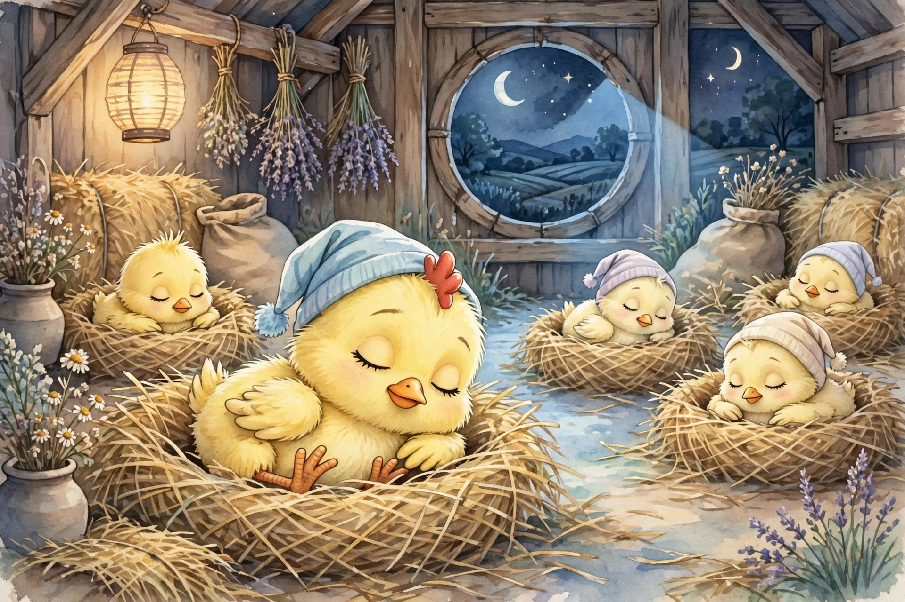
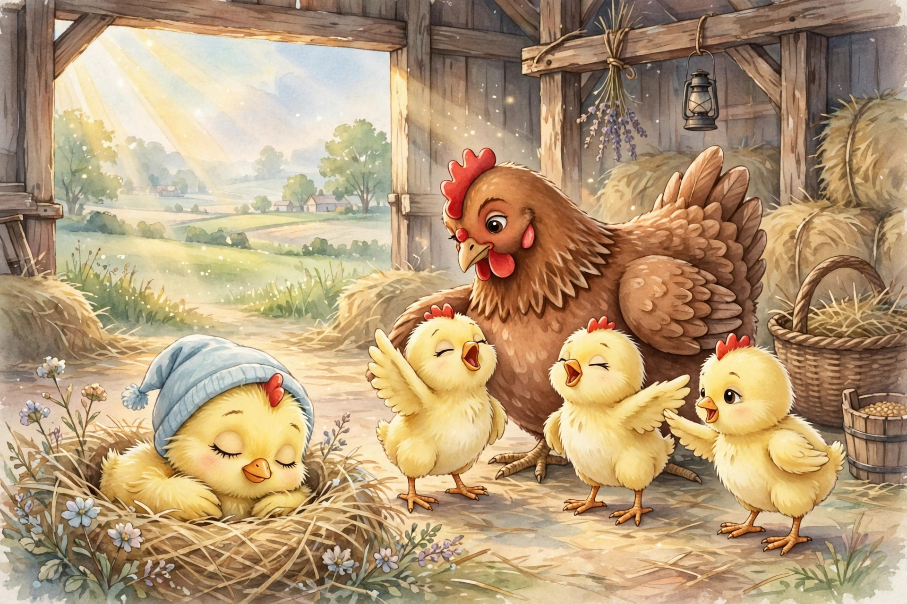
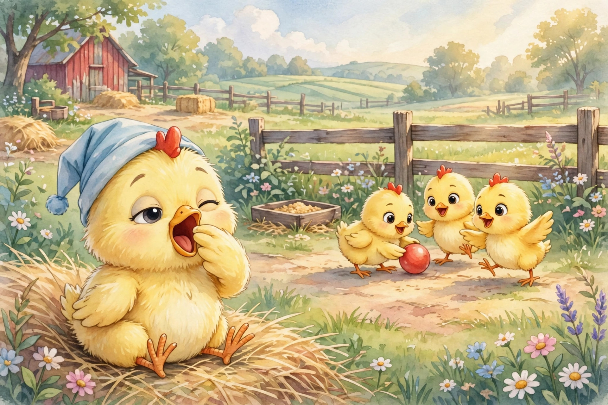
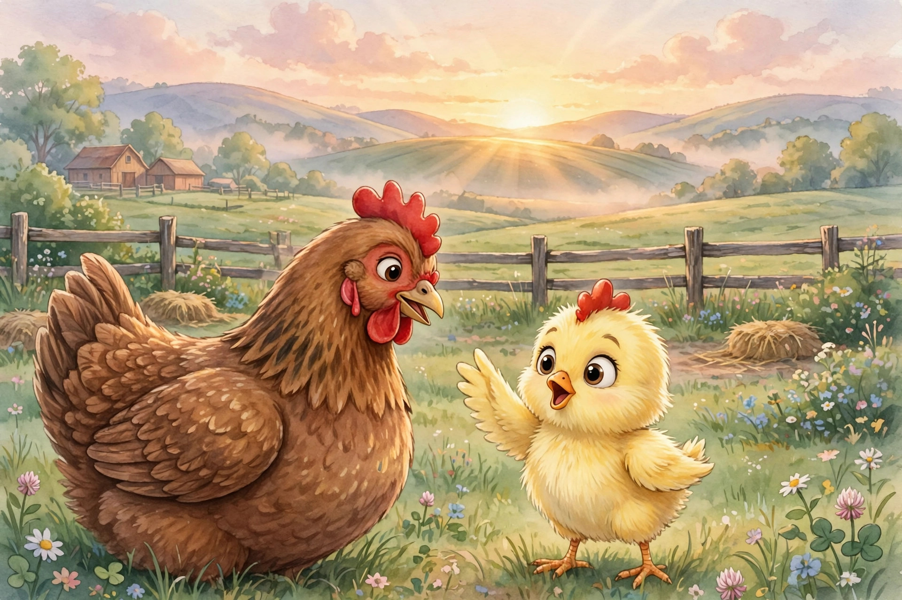
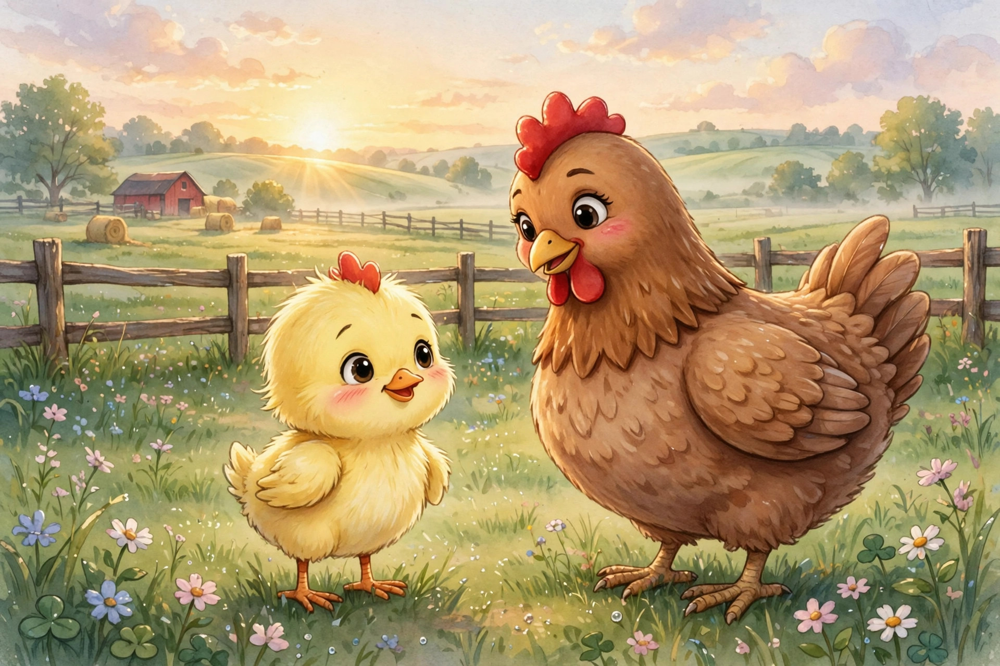
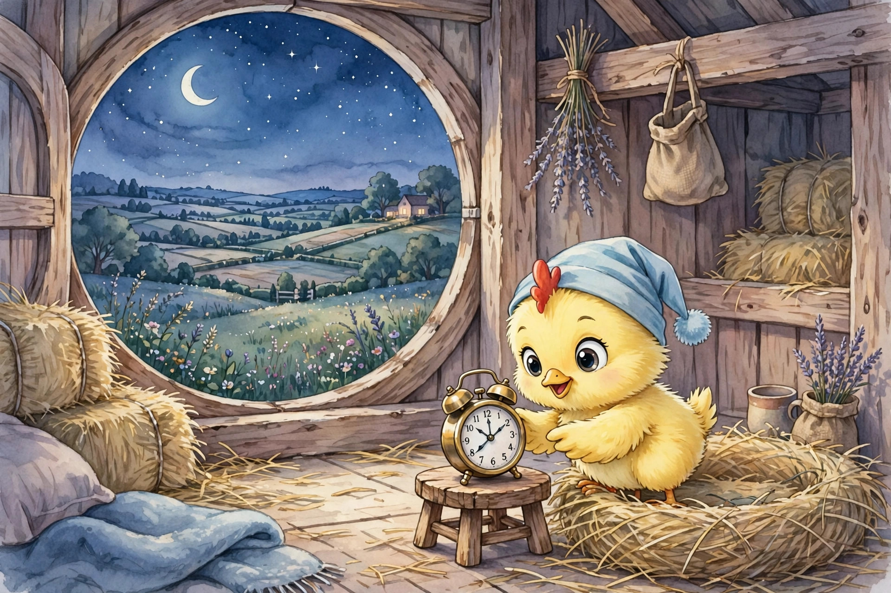
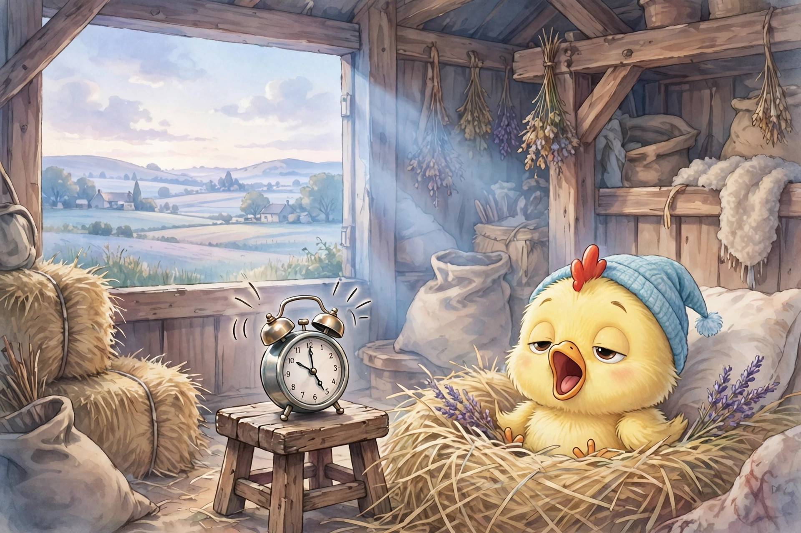
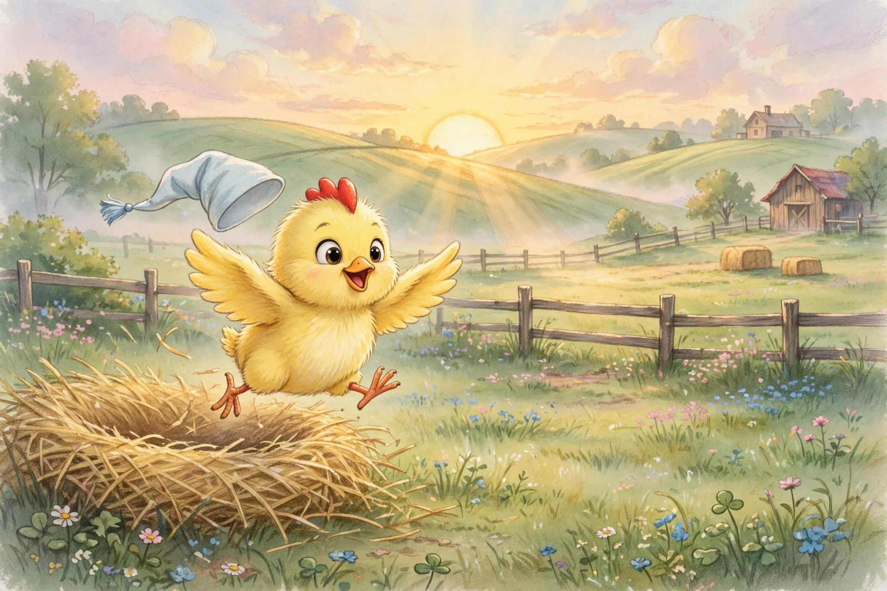
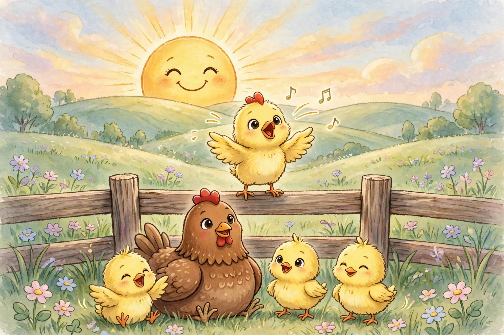
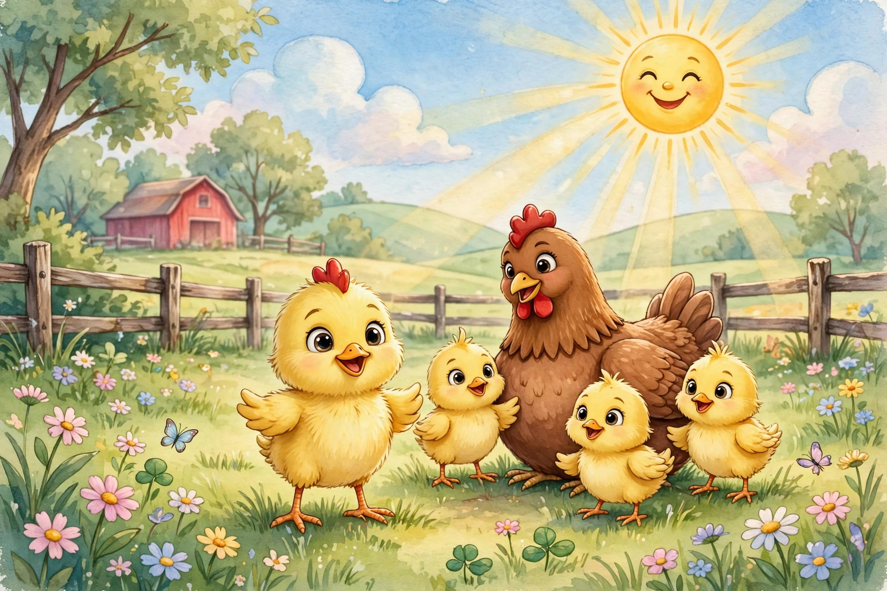

Cerita untuk DeerBee Kids Club
🔊 Setiap halaman bisa didengarkan suaranya
Koko adalah anak ayam kecil yang tinggal di kandang dekat sawah.
Bulunya kuning cerah, paruhnya oranye, dan ia memakai topi tidur biru kecil.

Setiap pagi, Ibu Ayam membangunkan semua anak ayam.
"Kukuruyuk! Ayo bangun, anak-anak!"
Tapi Koko masih tidur pulas.

Koko suka tidur lama. Saat teman-temannya sudah bermain, Koko baru membuka mata.
"Huuu... lima menit lagi," katanya sambil menguap.

Suatu pagi, Ibu Ayam berkata,
"Koko, hari ini ada tugas penting. Kamu harus membangunkan seluruh kandang sebelum matahari terbit."

Koko kaget. "Aku? Tapi aku selalu bangun paling akhir!"
Ibu tersenyum. "Coba dulu. Ibu percaya kamu bisa."

Malam itu, Koko memasang jam weker di samping tempat tidurnya.
Ia berjanji, "Besok aku bangun pagi!"

Pagi-pagi sekali, sebelum matahari terbit, jam weker berbunyi.
"Kring! Kring!"
Koko membuka mata dan menguap lebar.

Tapi Koko ingat janjinya. Ia melompat dari tempat tidur, melepas topi tidurnya, dan berlari ke halaman.
"Aku bisa! Aku bisa!"

Koko berdiri di atas pagar kayu dan berteriak lantang,
"KUKURUYUK!"
Seluruh kandang terbangun, dan matahari tersenyum dari balik bukit.

Sejak hari itu, Koko bangun pagi setiap hari.
Ia menjadi anak ayam paling rajin di kandang.
Kamu sudah membaca
Koko Si Ayam Kecil yang Belajar Bangun Pagi sampai habis!
Pintar sekali! 🌟